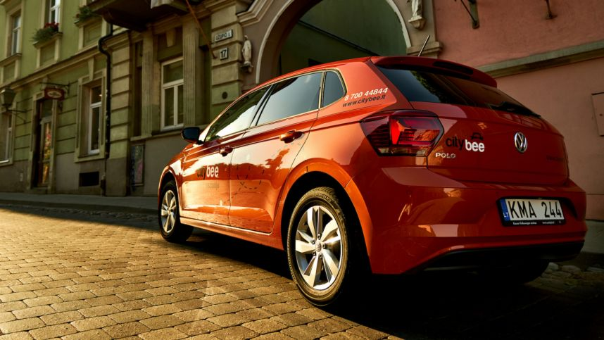

Automobilių nuoma Vilniuje, Kaune, Klaipėdoje ir Palangoje | AutoRentalis.lt

Automobilių nuoma Vilniuje, Kaune, Klaipėdoje ir Palangoje
LT
EN+37066166610
+37066166610
info@autorentalis.lt
info@autorentalis.lt
Mano rezervacijos Naujienos Apie mus Užsakymo sąlygos Mano rezervacijos Apie mus Užsakymo sąlygos Naujienos Kraunama... Geriausi automobilių nuomos pasiūlymai Lietuvoje! Daugybė tiekėjų Didžiausias pasirinkimas Mažiausios kainos Palyginkite ir sutaupykiteAutomobilio
nuomos paieška
Jeigu nepavyksta rezervuoti, skambinkite telefonu!
+37066166610
GERIAUSI ŠIANDIENOS AUTOMOBILIŲ
NUOMOS PASIŪLYMAI
Vilnius Kaunas Klaipėda Nuo 7.81 eurų per dienąFord Fiesta
Plačiau 5 2 5 Nuo 12.00 eurų per dienąVolkswagen Golf VII
Plačiau 5 2 5 Nuo 11.88 eurų per dienąRenaul Clio CW
Plačiau 5 2 5 Nuo 13.08 eurų per dienąVolkswagen Jetta
Plačiau 5 2 4 Nuo 15.59 eurų per dienąVolkswagen Passat
Plačiau 5 2 5 Nuo 19.22 eurų per dienąFord C-MAX
Plačiau 5 2 5 Nuo 22.40 eurų per dienąVolkswagen T-Roc
Plačiau 5 2 5 Nuo 32.78 eurų per dienąBMW 3 series
Plačiau 5 2 4 Rodyti viską Nuo 7.81 eurų per dienąFord Fiesta
Plačiau 5 2 5 Nuo 12.00 eurų per dienąVolkswagen Golf VII
Plačiau 5 2 5 Nuo 11.88 eurų per dienąRenaul Clio CW
Plačiau 5 2 5 Nuo 13.08 eurų per dienąVolkswagen Jetta
Plačiau 5 2 4 Nuo 15.59 eurų per dienąVolkswagen Passat
Plačiau 5 2 5 Nuo 19.22 eurų per dienąFord C-MAX
Plačiau 5 2 5 Nuo 22.40 eurų per dienąToyota RAV4
Plačiau 5 2 5 Nuo 32.78 eurų per dienąBMW 3 series
Plačiau 5 2 4 Rodyti viską Nuo 7.81 eurų per dienąFord Fiesta
Plačiau 5 2 5 Nuo 10.56 eurų per dienąOpel Astra
Plačiau 5 2 5 Nuo 12.42 eurų per dienąRenault Clio CW
Plačiau 5 2 5 Nuo 13.08 eurų per dienąVolkswagen Jetta
Plačiau 5 2 4 Nuo 15.59 eurų per dienąVolkswagen Passat
Plačiau 5 2 5 Nuo 19.22 eurų per dienąFord C-MAX
Plačiau 5 2 5 Nuo 22.40 eurų per dienąToyota RAV4
Plačiau 5 2 5 Nuo 32.78 eurų per dienąBMW 3 series
Plačiau 5 2 4 Rodyti viskąNaujausi pasiūlymai kasdien
Sutaupykite pinigų! Sekite naujausius pigių, vidutinių, prabangių automobilių, visureigių ar mikroautobusų nuomos pasiūlymus kiekvieną dieną IŠ DAUGYBĖS TIEKĖJŲ LIETUVOJE.
JOKIŲ IŠANKSTINIŲ MOKĖJIMŲ
Užsisakyti ir rezervuoti automobilį ar mikroautobusą galite be jokių išankstinių mokėjimų ar banko kortelių!
Didžiausias automobilių pasirinkimas
Mes siūlome didžiausią, visų klasių automobilių nuomą. Raskite tinkamiausią automobilių nuomos variantą Vilniuje, Kaune, Klaipėdoje, atitinkantį visus Jūsų poreikius.
Valdykite savo užsakymą
Automobilių nuoma Vilniuje, Kaune, Klaipėdoje - pasikeitė planai? Nemokamai, paprastai ir greitai pakeiskite datas, automobilį ar atsiėmimo vietą internetu.
DAŽNIAUSIAI UŽDUODAMI KLAUSIMAI
1Kas įskaičiuota į nuomos kainą?
Į automobilio nuomos kainą visuomet yra įskaičiuotas privalomasis civilinės atsakomybės draudimas, draudimas nuo vagystės, keleivių draudimas ir CASCO su ribota asmenine atsakomybe. PVM ir administraciniai mokesčiai taip pat yra įskaičiuoti, todėl atvykus į nuomos punktą garantuojame tokią nuomos kainą kaip ir rezervavote.
2Ką reikia turėti norint išsinuomoti automobilį?
Norint užsakyti automobilį išankstinis apmokėjimas ar banko kortelės nėra būtinos! Jums užtenka pateikti tik galiojančius kontaktinius duomenis.
Atvykus atsiimti automobilio į nuomos punktą su savimi turėkite galiojantį vairuotojo pažymėjimą, asmens tapatybės dokumentą ir banko kortelę, išduota Jūsų vardu.
Atkreipkite dėmesį, kad atsiskaitymo būdai, asmens dokumentai ir banko kortelių reikalavimai skiriasi tarp įvairių automobilių nuomos įmonių. Prieš atlikdami užsakymą pasitikslinkite automobilių nuomos sąlygas ir reikalavimus, nurodytus prie kiekvieno, pateikto automobilio.
Kaip rasti geriausius automobilių nuomos pasiūlymus?
Ieškodami ir užsakydami automobilius su AutoRentalis.lt, Jūs, vienoje vietoje galite matyti, palyginti ir gauti naujausius, geriausių kainų pasiūlymus. Dirbdami su daugybe automobilių nuomos įmonių Lietuvoje, pateikiame didžiausią automobilių pasirinkimą Jums.
4Kokios yra užstato sąlygos?
Užstatui priimamos ir debetinės banko kortelės!
Užstatas už išnuomojamą automobilį skiriasi kiekvienoje automobilių nuomos įmonėje, iš kurios automobilis yra užsakomas. Užstato dydis priklauso nuo užsakomo automobilio tipo ir klasės. Prieš atlikdami užsakymą užstato dydžius ir sąlygas galite peržiūrėti ir palyginti įmonių nuomos sąlygose, pateiktuose prie kiekvieno automobilio. Užstatas yra rezervuojamas atsiimant automobilį ir grąžinamas nuomos laikotarpio pabaigoje.
Kokie yra amžiaus reikalavimai norint išsinuomoti automobilį?
Standartinis vairuojančio asmens amžius turi būti ne mažesnis nei 20 metų, o vairavimo stažas ne mažesnis kaip 2 metų. Šie apribojimai skiriasi tarp įvairių automobilių nuomos įmonių. Tikslius apribojimus galite peržiūrėti įmonių sąlygose, pateiktose prie kiekvieno automobilio.
6Kaip galiu keisti savo užsakymą?
Savo užsakymą galite valdyti prisijungę prie "Mano Rezervacijos" paskyros. Nemokamai pakeisti automobilio klasę, nuomos laiką ar atšaukti užsakymą, galite likus ne mažiau kaip 72 valandoms iki automobilio atsiėmimo laiko.
Naujienos
Automobilių nuoma Vilniaus, Kauno, Palangos oro uostuose. Ką pravartu žinoti?
Automobilio nuomos ieškančiam klientui, atvykstančiam į oro uostą dažnai kylą klausimai: kur reikės atsiimti automobilį? Ar teks kieno nors laukti? Kaip automobilį grąžinti? Ar atvykti galima nakties metu? Atsakant į visus šiuos klausimus, norime patikslinti, kad automobilių nuoma ...
Plačiau28 Lie
2019
Išbandykite naujausių, 2019 metų, Toyota automobilių nuomą
Mūsų siūlomų automobilių parką jau papildė naujieji Toyota RAV4 visureigiai ir vidutinės klasės Toyota Corolla modeliai. Šių automobilių nuomą nuo šiol galite išbandyti visuose mūsų nuomos punktuose. 2019 metais pristatyti automobiliai pasižymi ne tik atnaujintomis, stilingomis ... Daugiau...
Plačiau04 Lie
2019
Mikroautobusų nuoma – galimybė keliauti saugiai ir patogiai
Kelionė mikroautobusu - populiarus sprendimas, mėgstantiems išvykas su draugų, artimųjų kompanija ar įvairių švenčių metu, kai didesnėje transporto priemonėje gali keliauti visi vestuvių, mergvakario, bernvakario ar krikštynų dalyviai. Mikroautobusų nuoma suteikia galimybę keliauti... Daugiau...
Plačiau04 Vas
2018
Naujas būdas rasti geriausius automobilių nuomos pasiūlymus
Automobilio nuoma Vilniuje, Kaune, o gal Klaipėdoje ar Palangoje? Kad ir kokiame Lietuvos mieste ieškotumėte automobilių nuomos, tai gali būti nelengvas ir laiką užimantis procesas, ypač jei tai darote pirmą kartą ir ieškote geriausio kainą ir kokybę atitinkančio pasiūlymo. Dažniausi... Daugiau...
Plačiau22 Spa
2017
Automobilių nuoma Europos Sąjungos šalyse
Automobilių nuoma Lietuvoje ir kitose ES šalyse - į ką atkreipti dėmesį? Automobilis – neatsiejama kasdienio susisiekimo priemonė. Juo keliaujama į darbus, susitikimus, keliones. Tvarkinga transporto priemonė užtikrina saugią ir greitą kelionę, todėl kasmet vis daugiau žmonių ne t... Daugiau...
Plačiau22 Spa
2017
Rodyti viskąŠiandien, kai draugystės su gamta svarba ir sveikos gyvensenos idėjos plinta sparčiau nei bet kada anksčiau, o gyvenimas Vilniaus, Kauno arba Klaipėdos centre leidžia visas būtiniausias vietas pasiekti greitai ir patogiai pėsčiomis, dviračiu arba viešuoju transportu, nuosavas automobilis tampa nebe būtinybe. Jei gyvenate miesto pakraštyje arba užmiestyje ir į darbą kasdien turite važinėti nemažus atstumus, atsisakyti automobilio neverta, tačiau, jei gyvenate mieste ir dirbate netoliese, verta apmąstyti šį variantą. Tačiau suprantame, kad atsisakius automobilio, jo poreikis visam laikui nedingsta. Yra atvejų, kada automobilis yra būtinas, todėl tada siūlome naudotis automobilio nuomos paslauga.
Kada verta nuomoti automobilį?
Automobilių nuoma yra naudinga visada, kai yra poreikis transporto priemone naudotis tiek mieste, tiek užmiestyje, tiek vykstant į užsienio šalis, nepriklausomai, ar nuomos trukmė būtų kelios valandos, ar keli mėnesiai. Automobilių nuoma galima tiek susisiekimui, tiek klientų, šeimos narių pavėžėjimui, tiek persikraustymo reikmėms, kadangi nuomojame visų klasių transporto priemones.Kas dažniausiai naudojasi automobilių nuoma?
Automobilius dažniausiai nuomoja į Lietuvą giminių ir draugų aplankyti grįžę užsienyje gyvenantys lietuviai arba Lietuvos pamatyti ir pakeliauti po mūsų šalį atvykę turistai. Taip pat dažni automobilių nuomos klientai yra Vilniaus, Kauno arba Klaipėdos gyventojai, kurių automobiliai sugenda arba patenka į autoįvykį, taip pat tie, kurie nori vykti į užsienį ir ieško patogesnio, didesnio, kokybiškesnio transporto, arba tie, kurie neturi nuosavo automobilio. Automobilį neretai nuomojasi ir gyventojai, vykstantys į oro uostą ir nenorintys brangiai mokėti už nuosavo automobilio parkavimą visos kelionės metu arba prašyti draugų ir artimųjų, kad jie atliktų taksistų pareigą. Autonuoma Vilniuje, Kaune ir Klaipėdoje taip pat reikalinga gali būti įmonėms, kurioms kartais reikia transporto priemonės, tačiau turėti savo asmeninę neapsimoka.Kodėl verta nuomoti automobilį?
Pagrindinės priežastys, kodėl kai kuriais atvejais verta nuomoti automobilį yra patogumas ir pinigų bei laiko taupymas. Automobilių nuoma Kaune, Vilniuje arba Klaipėdoje – patogi paslauga keliaujant automobiliu į užsienį arba kelionėse po Lietuvą, nes galite išsinuomoti techniškai tvarkingą, komfortabilų ir talpų autobusiuką. Juk daug smagiau keliauti su draugų kompanija, pasiimti į kelionę visus reikalingus daiktus, tačiau jais neapsikrauti. Ne mažiau patogu ir keliaujant į oro uostą arba iš jo, nes nereikia su visais lagaminais ir daiktais grūstis į viešąjį transportą. Visi žinome, kiek kainuoja automobilio priežiūra ir išlaikymas, automobilio parkavimas mieste arba oro uoste, todėl, jei automobilio Jums reikia periodiškai, pigiau kainuoja automobilio nuoma nei nuolatinis nuosavo automobilio išlaikymas. Autonuoma leidžia sutaupyti ir laiko, kurį skiriate ne tik automobilio priežiūrai, bet ir pagreitina kelionę, jei Jūsų nuosavas automobilis sugedo, taip pat artimųjų laiką, kurį jie skirtų Jus nuvežti į oro uostą arba kitą reikiamą vietą.Kodėl rinktis mus?
AutoRentalis.lt yra automobilių nuomos Vilniuje, Kaune ir Klaipėdoje platforma, kurioje žmonės gali palyginti ir užsisakyti geriausiai poreikius patenkinančius naujų automobilių nuomos pasiūlymus iš daugybės tiekėjų Lietuvoje. Mūsų privalumas ir išskirtinumas – koncentruojamės į Lietuvos rinką, t. y., autonuoma Vilniuje, Kaune ir Klaipėdoje – mūsų specializacija. Tiesiogiai dirbami tik su atrinktais ir patikimais tiekėjais, užtikriname itin geras kainas, sąlygas ir 24/7 klientų aptarnavimą. Visada galite susisiekti su mumis ir gauti geriausią automobilio nuomos pasiūlymą, atitinkantį visus Jūsų poreikius. Gali palyginti ne tik skirtingų tiekėjų siūlomas automobilių nuomos kainas, tačiau ir nuomos sąlygas, užstatų dydžius ir visą aktualią informaciją, kuri, skirtingai nei iš tarptautinių užsakymo platformų, yra pateikiama tiksli: tikslūs užstatų dydžiai, sąlygos ir jokių paslėptų mokesčių, kas, deja, tačiau kartais pasitaiko užsisakant automobilį iš tarptautinių užsienio kompanijų – nuomos brokerių. Atvykus atsiimti išnuomoto automobilio nebus jokių nemalonių staigmenų, kadangi viskas yra aiškiai pateikta prieš atliekant automobilio rezervaciją.Pasiūlymas verslo klientams
Teikiame prabangaus, krovininio, keleivinio ar kito transporto paslaugas verslo klientams tiek trumpalaikei, tiek ilgalaikei nuomai. Su mumis verta bendradarbiauti, nes ilgalaikiems klientams taikome nuolaidas ir išskirtinius pasiūlymus. Ilgailaike automobilių nuoma yra laikoma mėnesio trukmės ir ilgesnė nuoma.Kur atsiimti ir palikti išnuomotą automobilį?
Automobilių nuomai Vilniuje yra didžiausias poreikis, šiek tiek mažesnis – Kaune, automobilių nuoma Klaipėdoje reikalinga dar rečiau, į šį sąrašą dar patenka ir Palanga. Todėl tam, kad patenkintume visus didžiausius poreikius, teikiame automobilių nuomos paslaugas trijuose didžiuosiuose Lietuvos miestuose ir jų teritorijose. Taip pat suteikiame galimybę automobilį atsiimti viename mieste, o palikti – kitame.Parašykite mums
Parašykite mums!
+37066166610
× Uždaryti
L. Asanavičiūtės g. 8-149, LT-04302 Vilnius
įmonės kodas: 304471458
El. p. info@autorentalis.lt
tel. +37066166610
Pirkimo taisyklės ir sąlygos Privatumo politika Automobilių nuoma Vilniuje Automobiliai Automobilių nuoma Kaune Automobilių nuoma Klaipėdoje Autorinės teisėsⒸ 2020 „Automobilių nuomos sprendimai“
× Gauta nauja automobilio rezervacija !Užsakyta iš kliento
